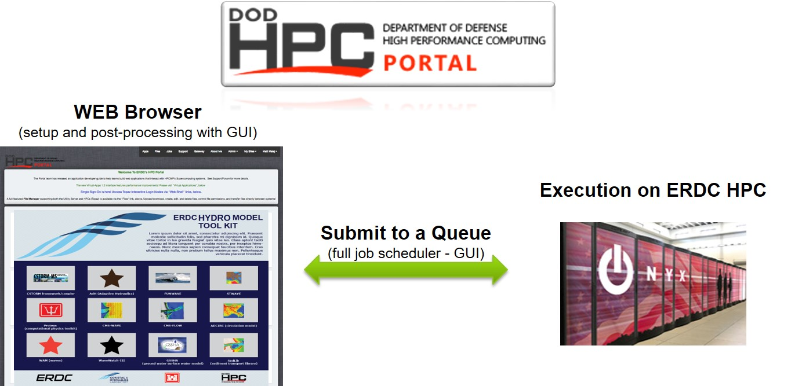

USACE Applications¶
Nearshore shallow water to finite depth coastal environments
Navigation channels
Intra-coastal waters
Ship-generated waves and related sediment transport
Harbors and Austere Ports of Entry
Transitioning to HPC-Portal for USACE¶
FUNWAVE–TVD is both the approved and recommended U.S. Army Corps of Engineers (USACE) numerical Boussinesq wave model, funded by both Civil Works (CW) research programs (Navigation Systems and Flood and Coastal Systems). In addition, it is supported by the Coastal Working Group (CWG) and the Hydrology, Hydraulics, and Coastal (HH&C) USACE communities of practice (CoP).
In 2019, USACE and the greater DoD will be capable of running FUNWAVE remotely on hundreds and/or thousands of cores/processors in a Graphical User Interface (GUI) environment using a web browser!
{kind=link}
Benefits of transitioning¶
Represents a completely new model delivery approach! Paradigm shift – from local to “cloud”
Centralized ERDC Hydro Toolkit with guidance on what to use and when (model wise)
DoD enterprise security credentials/login verifying (CAC) managed externally
No concern over versioning or software-system compatibility issues (SMS & Windows)
Common branding and in-line with Numerical Model Modernization Strategy
Access via a browser without ANY local software installation (ACE-IT network) issues
ALL computations done on the back end! Nothing on your desktop/laptop
Simulations on 100’s and 1000’s of processors – fully parallelized on HPC machines
Most of the result postprocessing and visualization done on the back end without the need to move Gigs of data to and from the HPC (no CorpsNet bandwidth restriction)
Collaborative user-friendly GUI computational environment with access to experts
Direct and fast link to more information (basic + extensive Wiki) without searching any printed of electronic manual/publication
Parameter bound and input safety checking – reduces number of initial failures
Larger USACE/DoD user base because of a reduced learning curve